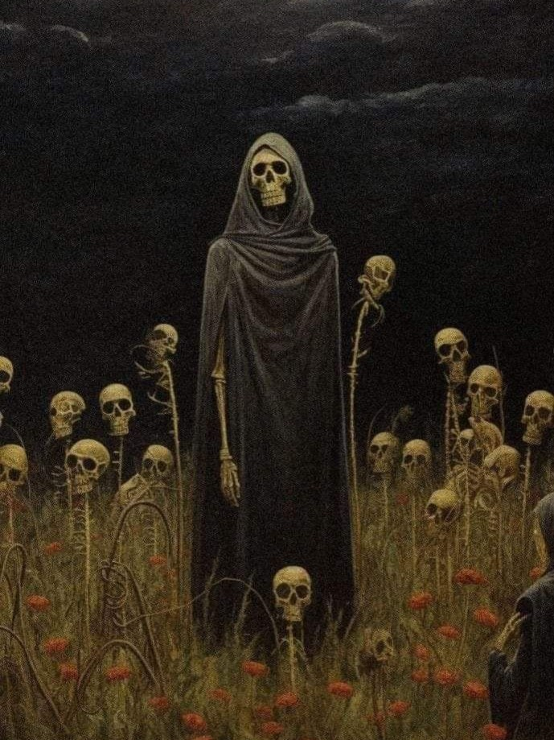
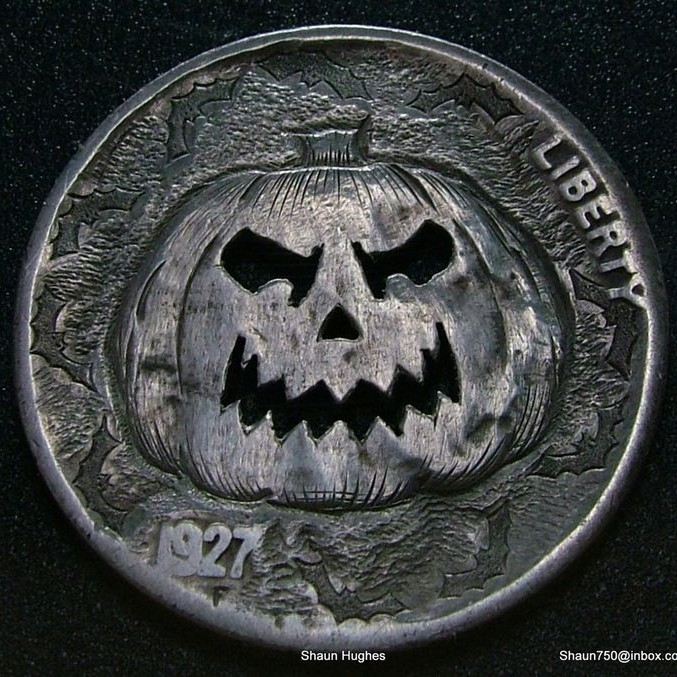
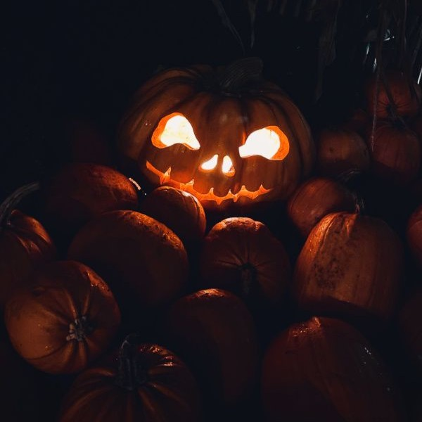

HalloBank: un banco para morirse del susto.
Si estas aqui para intercambio, extravio o prestamos de alma o calabazas, te encuentras en el lugar correcto. Somos el banco de la ciudad desde su inauguracion. Don Craneo nunca nos ha fallado guardando nuestras calabazas, o bueno, no siempre.
Craneo

Craneo
Craneo es un esqueleto que persistio durante decadas en su lugar inmovil, incluso antes de la inauguracion de HalloweenTown. El rey calabaza suele contar historias sobre él antes de que se vuelva completamente inmovil. Fue el primer esqueleto no-vivo en viajar al más allá.
- Legado: Fue una ofrenda para la distribucion de riqueza en HalloweenTown.
- Sistema: A cambio de una Pumpkin Coin, ayuda a crecer calabazas que albergan una o mas Pumpkin Coins dentro.
- Se encuentra en el Parque de La ciudad.
- Cuenta la leyenda que solo los monstruos mas aterradores lo ven moverse.
Intercambio de Pumpkin Coins
Los intercambios de Pumpkin Coins tienen lugar en varias Zonas a lo largo de la ciudad. En ellos las personas con mas gatos negros intercambian Calabazas o Coins para poder probar suerte.
Puntos de Encuentro HalloweenTown:

Pumpkin Coin
Es la moneda de cambio oficial de Halloweentown, una de las mas valiosas en el sector. Normalmente se consiguen sembrando Calabazas maldecidas por Craneo. Esto les otorga Coins en vez de las semillas de una calabaza regular.

Calabazas.
Son el segundo tipo de moneda de HalloweenTown, sirven para intercambiarlas por recursos o incluso otras calabazas o coins.